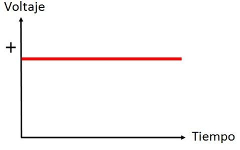
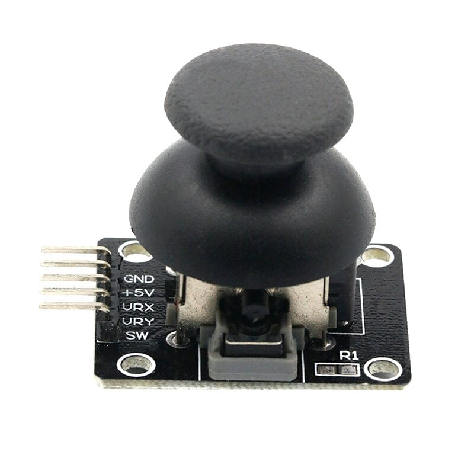

Semana 9
FECHA
18/05/22
HORA
4:00-6:00 P.m
¿Qué es la electrónica?
Es el campo de estudio centrado en el control de la electricidad y los componentes físicos y los circuitos que ayudan a dirigir la energía eléctrica.
Unidades Fundamentales Eléctricas
Corriente Eléctrica
Material que naturalmente no es conductor, pero mediante un tratamiento químico puede llegar a ser conductor, como por ejemplo el silicio, germanio.
Conductor
Son materiales con elementos que tienen una atracción débil entre los átomos y sus electrones.
Semiconductor
Se crea a partir del movimiento de los electrones. La corriente fluye en un ciclo cerrado y es uniforme en todos los puntos de ese ciclo.
Voltaje
Es la fuerza que transporta la corriente, también llamada presión eléctrica. El voltaje se mide como la diferencia de energía potencial eléctrica entre dos puntos.
Amperios (A)
Miden la intensidad de la corriente eléctrica. Son una medida que indica la cantidad de electrones en una corriente eléctrica.
Potencia
Es la cantidad de energía que se consume en un momento determinado. La potencia se mide en watts.
Circuito eléctrico
Es una red física de componentes eléctricos interconectados entre los que se incluyen baterías, resistores, capacitores, inductores e interruptores.
Fuentes
Cada pila presenta un diferencial de potencia debido a una resistencia interna propia y puede llegar a ser en principio muy bajo, pero a medida que se usa se va agotando.
Ley de Ohm
• Donde V es la tensión que se mide en voltios (V). • Donde I es la intensidad de la corriente que atraviesa la resistencia, y que se mide en Amperios (A). • Donde R es la resistencia que se mide en Ohmios (Ω). Formula: (V = I x R)
Circuito básico
Circuito cerrado: Permite que los electrones fluyan y generen una corriente eléctrica.
Circuito abierto:: Tiene una interrupción en la ruta que detiene el flujo de la corriente.
circuito en serie

circuito en paralelo
La instalación eléctrica de la casas estan hechas por este circuito paralelo.
corriente continua (CC)
Es producida por fuentes como baterías, fuentes de alimentación, células solares.
corriente alterna (CA)
Es la forma en la que la energía eléctrica se suministra a los negocios y lasresidencias.
Los circuitos analógicos
Son aquellos en los que la corriente o el voltaje puede variar de forma continua con el tiempo.
Los circuitos digitales
La instalación eléctrica de la casas estan hechas por este circuito paralelo.
Componentes electrónicos
DIODO
RESISTENCIA
PROTOBOARD
Más componetes
POTENCIÓMETRO
Un potenciómetro es un resistor eléctrico con un valor de resistencia variable y generalmente ajustable manualmente.
SENSOR DE LUZ (LDR)
Es un componente foto electrónico, varía en función de la luz que incide en él. Esta resistencia es muy baja, de unos pocos Ωs y va creciendo fuertemente.
MOTOR PASO PASO
Es un dispositivo electromecánico que es capaz de girar una cantidad de grados dependiendo de sus entradas de control.

ZUMBADOR (BUZZER)
Es un dispositivo electrónico que actúa como un transductor. Su función es producir un sonido agudo o zumbido mientras se le está suministrando corriente.

MULTIMETRO
Es un instrumento que mide principalmente magnitudes de corriente, voltaje y resistencia, sin embargo algunos modelos permiten calcular temperatura, capacitancia, parámetros de los transistores, entre otros.
Existen dos tipos de multímetros:
• Análogos: Galvanómetro
• Digitales: Display
En clase hicimos una actividad sobre los temas que vimos en clases. En la plataforma de join my quiz.com
Después continuamos con la clase.
¿Qué es un Arduino?
Es una plataforma de código abierto diseñada para facilitar proyectos de electrónica. Su Hardware está compuesto por un microcontrolador y un puerto de entrada y salida.
Estructura
Modelo del microcontrolador
ATMEGA328P
El microcontrolador que lleva la placa Arduino UNO es el modelo ATmega328P de la marca Atmel. El ATmega328P pueda trabajar a un voltaje menor y consumir menos corriente que el ATmega32.
Beneficios
•Arduino tiene una gran comunidad.
•Su entorno de programación es multiplataforma.
•Lenguaje de programación de fácil compresión.
•Re-usabilidad y versatilidad.
•Bajo costo.
TIPOS DE ARDUINO


SENSORES DE ARDUINO
Joystick sensor
Sensor de sonido

Sensor de luz
Sensor ultrasónico
¿Qué son los shields?
•Son placas que las colocas encima de otra y sirven para ampliar las funcionalidades del Arduino.
• Crea como una capa adicional de dispositivo, una pantalla detrás de la cual se esconden varios elementos.
Arduino
¿Qué es?
Arduino es un software de código abierto que está escrito en Java y funcionará en una variedad de plataformas: Windows, Mac y Linux.
LINKEstructura de un Sketch
Un programa de Arduino se denomina sketch o proyecto y tiene la extensión .ino.
Adicionalmente se puede incluir una introducción con los comentarios que describen el programa y la declaración de las variables y llamadas a librerías.
setup() es la parte encargada de recoger la configuración y loop() es la que contiene el programa que se ejecuta cíclicamente (de ahí el término loop –bucle-). Ambas funciones son necesarias para que el programa trabaje.
Importante: para que funcione el sketch, el nombre del fichero debe estar en un directorio con el mismo nombre que el sketch.
Librerías
Son trozos de código hechos por terceros que usamos en nuestro sketch. Esto nos facilita mucho la programación y hace que nuestro programa sea más sencillo de hacer y de entender.
Comentarios
Las primeras líneas del boceto de Blink son un comentario .

Qlone 3D
Una app gratuita desarrollada para escanear pequeños objetos.
Tutorial
LINKImprecion
LINKDescargas
Google PlayEjercicio

Si tienes xiamo no te permitir descargar el app.